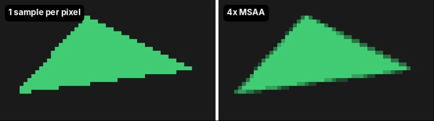

Advanced Metal
Anti-Aliasing#
Look closely at the edge of any cube we have rendered and you see a staircase. A pixel is either inside a triangle or outside it, and nothing in between. That stair-step pattern is aliasing, and techniques that hide it are called anti-aliasing.
Why edges alias#
The rasterizer tests one point per pixel, its center, against each triangle. If the center is covered, the fragment function runs and the whole pixel takes the color. A slanted edge therefore advances in whole-pixel steps.
Rendering at a higher resolution and scaling down (supersampling) solves it, but shading four times as many pixels is expensive.
Multisampling#
Multisample anti-aliasing (MSAA) gets most of the benefit at a fraction of the cost. Each pixel has several sample points, typically four, at different positions inside it. For every triangle:
- coverage and depth are tested at every sample,
- the fragment function still runs only once per pixel,
- its result is stored in each sample that the triangle covers.
At the end, the samples of each pixel are averaged in a step called the resolve. A pixel half covered by a triangle ends up as an even mix of the triangle's color and the background.

MSAA with MTKView#
MTKView manages the multisample texture and the resolve for you. Two lines are needed:
view.sampleCount = 4
pipelineDescriptor.rasterSampleCount = 4
Every pipeline state used in the pass must have the same sample count as the attachments. Run it and the edges are smooth.
A sample count of 4 is supported on all Metal devices. Check others with device.supportsTextureSampleCount(8).
MSAA in your own render passes#
For offscreen passes you create the textures yourself. You need two color textures: a multisample texture to render into, and an ordinary texture to receive the resolved image.
let msaaDescriptor = MTLTextureDescriptor.texture2DDescriptor(
pixelFormat: .bgra8Unorm, width: width, height: height, mipmapped: false)
msaaDescriptor.textureType = .type2DMultisample
msaaDescriptor.sampleCount = 4
msaaDescriptor.usage = .renderTarget
msaaDescriptor.storageMode = .memoryless // .private on Intel Macs
let msaaColor = device.makeTexture(descriptor: msaaDescriptor)!
The depth texture must be multisampled in the same way. Then connect them in the render pass descriptor:
pass.colorAttachments[0].texture = msaaColor
pass.colorAttachments[0].resolveTexture = sceneColor // ordinary texture
pass.colorAttachments[0].loadAction = .clear
pass.colorAttachments[0].storeAction = .multisampleResolve
pass.depthAttachment.texture = msaaDepth
pass.depthAttachment.storeAction = .dontCare
The store action .multisampleResolve averages the samples into resolveTexture at the end of the pass and discards the multisample data. Because the samples are never needed afterward, the multisample textures can be memoryless on Apple GPUs: 4× MSAA then costs no extra memory at all, only some extra work inside each tile. This is a real advantage of tile-based GPUs and makes MSAA unusually cheap on Apple devices.
Limits of MSAA#
MSAA smooths geometry edges only. The fragment function runs once per pixel, so it does nothing for:
- shimmering inside a surface from high-frequency textures or sharp specular highlights,
- edges created by
discard_fragmentin alpha-tested textures. For those, enableisAlphaToCoverageEnabledon the pipeline descriptor, which converts the fragment's alpha into a sample coverage mask.
MSAA also clashes with deferred shading, where lighting happens after geometry has been flattened into textures.
Reading individual samples#
A shader can read a multisample texture directly through the texture2d_ms<float> type, one sample at a time:
fragment float4 fragment_customResolve(ScreenOut in [[stage_in]],
texture2d_ms<float> scene [[texture(0)]]) {
uint2 pixel = uint2(in.position.xy);
float4 sum = float4(0);
for (uint i = 0; i < scene.get_num_samples(); i++) {
sum += scene.read(pixel, i);
}
return sum / float(scene.get_num_samples());
}
A custom resolve matters for HDR rendering, where tone mapping each sample before averaging gives much cleaner bright edges. The multisample texture then needs .shaderRead usage and cannot be memoryless.
Other approaches#
- FXAA and SMAA are post-processing filters that find edges in the finished image and blur along them. They are cheap and work with any renderer, at the cost of some sharpness.
- Temporal anti-aliasing (TAA) shifts the camera by a sub-pixel amount each frame and blends with previous frames. It handles shading aliasing too, but needs motion vectors and care to avoid ghosting.
- MetalFX is Apple's upscaling framework. You render at a lower resolution, and it reconstructs a sharp, anti-aliased image at full resolution with either a spatial or a temporal method. The temporal upscaler doubles as high-quality anti-aliasing.
Exercises#
- Compare sample counts 1, 2 and 4 on a thin, nearly horizontal triangle.
- Draw alpha-tested grass with and without alpha-to-coverage under 4× MSAA.